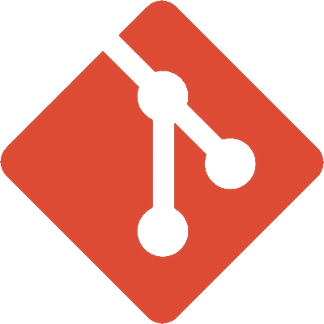
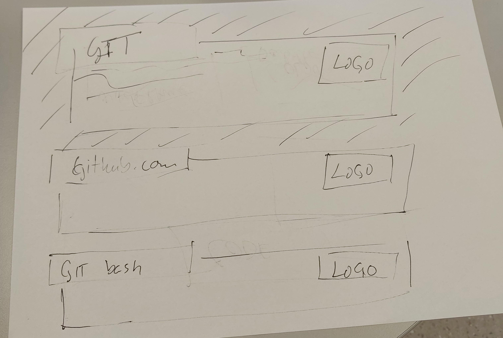
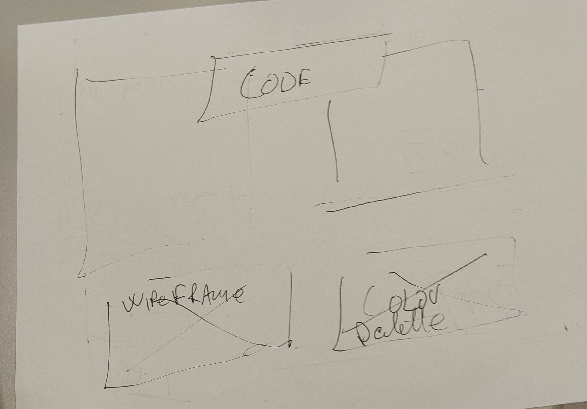
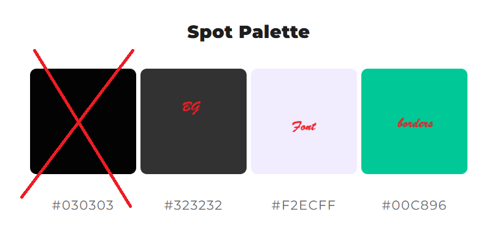

Dette er en viktig del å forstå. Hvis du vet hva Git er og forstår det grunnleggende i hvordan det fungerer, blir det sannsynligvis mye enklere å bruke Git effektivt. Når du lærer Git, bør du prøve å legge til side det du kanskje vet om andre VCS-er, som CVS, Subversion eller Perforce. Det kan hjelpe deg med å unngå misforståelser når du bruker verktøyet. Selv om Git sitt user interface ligner på det man finner i disse andre VCS-ene, lagrer og behandler Git informasjon på en helt annen måte. Når du forstår disse forskjellene, blir Git enklere å bruke.
Den største forskjellen mellom Git og andre VCS-er, inkludert Subversion og lignende systemer, er måten Git behandler data på. De fleste andre systemer lagrer informasjon som en liste over filbaserte endringer. Disse systemene, som CVS, Subversion og Perforce, ser på den lagrede informasjonen som en samling filer og endringene som blir gjort i hver fil over tid. Dette kalles vanligvis delta-based version control.
GitHub er en nettbasert tjeneste for version control med Git. Det er i praksis et sosialt nettverk for utviklere. Du kan se på koden til andre, finne issues i koden og foreslå endringer. Dette kan også hjelpe deg med å forbedre din egen kode. GitHub er dessuten et godt sted å vise fram prosjektene dine og bli lagt merke til av potensielle arbeidsgivere.
Git Bash er en applikasjon for Microsoft Windows som gir et emulation layer for bruk av Git via command line. Bash er en forkortelse for Bourne Again Shell. Et shell er en terminalapplikasjon som brukes til å kommunisere med et operating system gjennom skriftlige commands. Bash er et populært standard-shell på Linux og macOS. Git Bash er en pakke som installerer Bash, noen vanlige Bash utilities og Git på Windows.



.textdiv havner foran .head1, hvorfor?
Jeg glemte "position: relative;" :-|
fra linje 100 i git.html, kan du flytte </li> til slutten?
kan du gjøre det samme fra linje 111 til 118?
Teksten i .textdiv er på engelsk, kan du oversette til norsk? Behold fagbegrep på engelsk.